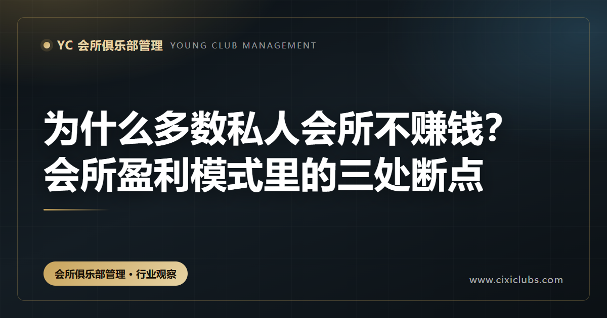
为什么多数私人会所不赚钱？会所盈利模式里的三处断点
在高端会所这个行业，开业即巅峰是常见剧本：开业时人声鼎沸，两年后门可罗雀。原因通常不在硬件，而在三处断点。 断点一：收入结构里没有会籍 很多会所的收入表里，餐饮、场地租赁、商品零售占了大头，会籍销售与续费几乎为零。这是典型的把会所当餐厅开。…
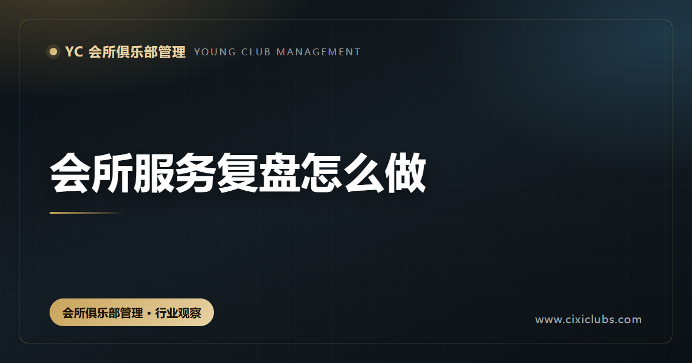
会所服务复盘怎么做
会所服务复盘不是为了追责，也不是把例会变成意见收集。真正有效的复盘，是把会员体验、现场执行和团队协作放在同一张桌面上，找出服务链路中反复出现的问题，并形成下一次能够执行的改进行动。复盘做得好，团队会越来越清楚什么值得坚持，什么必须调整。 一…
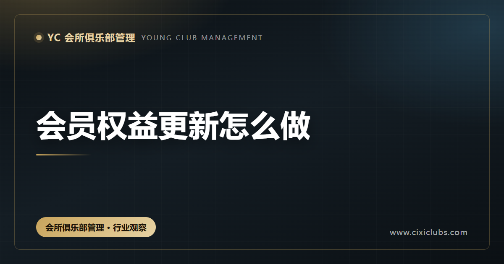
会员权益更新怎么做
会员权益需要随着空间、服务和会员需求持续调整，但更新不能只增加项目，也不能单纯减少成本。一次成熟的权益更新，应让会员更容易理解、让团队更容易执行，并让会所能够判断哪些服务真正创造价值。 一、先盘点现有权益 更新前要把当前权益逐项列出，记录使…
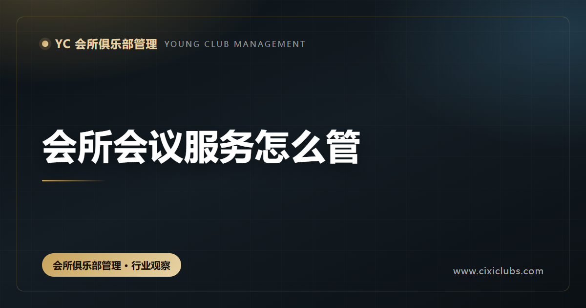
会所会议服务怎么管
会议服务是高端会所最容易被低估的工作。会员或企业客户预订会议室，看似只是安排空间、桌椅和设备，实际考验的是信息确认、跨部门协同、现场应变和保密管理。一个细节没有衔接好，就会影响整场会议的专业感受。 一、预订阶段先确认用途 接到会议预订时，不…
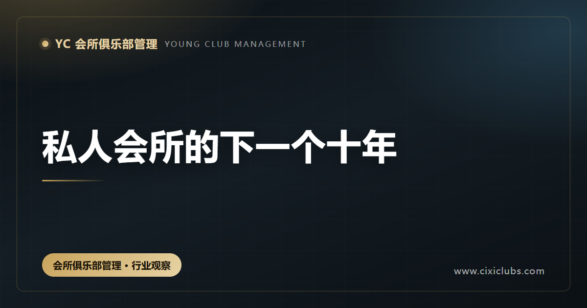
私人会所的下一个十年
私人会所过去常依靠稀缺空间、豪华装修和身份象征吸引会员。随着消费习惯变化，单靠硬件已经难以形成长期关系。未来的会所竞争，不只是比谁的空间更精致，而是比谁能持续提供有价值的内容、稳定的服务和真实的会员连接。 一、从空间消费转向时间价值 会员愿…
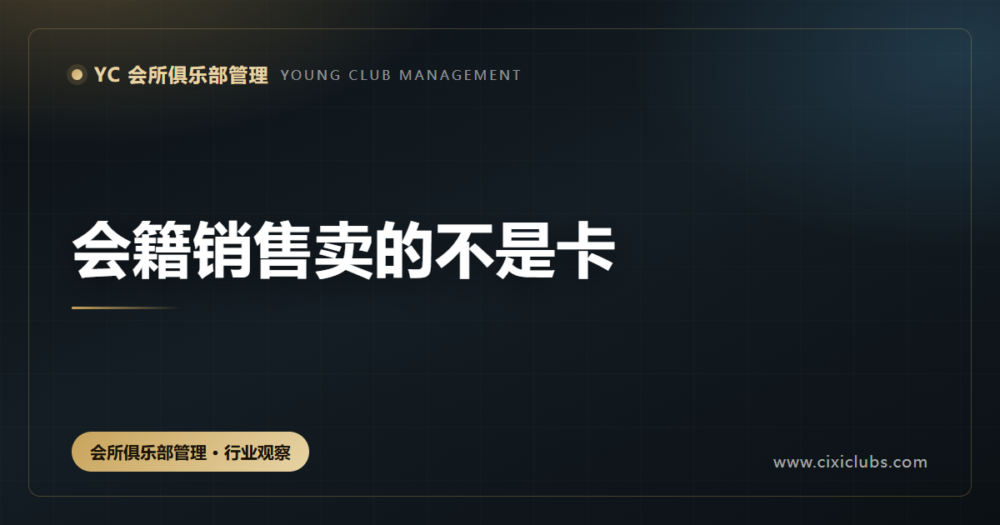
会籍销售卖的不是卡
会籍销售经常被理解成产品介绍和成交动作：讲清价格、权益和期限，然后推动客户签约。但从会员的角度看，购买会籍不是买一张卡片，而是在选择未来一段时间的生活方式、社交空间和服务关系。销售如果只关注成交，却不理解会员之后如何使用、由谁服务、遇到问题…
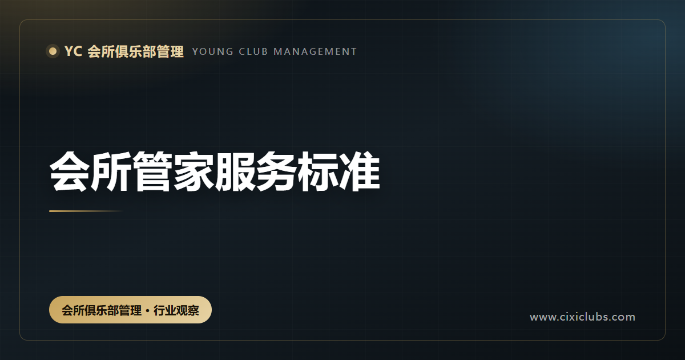
会所管家服务标准
会所管家不是简单替会员开门、订餐和安排车辆。管家的价值在于理解会员需求、协调内部资源、跟进服务结果，并让会员不必重复说明。建立管家服务标准，重点不是增加礼仪动作，而是把信息、权限、协作和复盘组织成一套稳定的工作方式。 一、建立会员认知 管家…
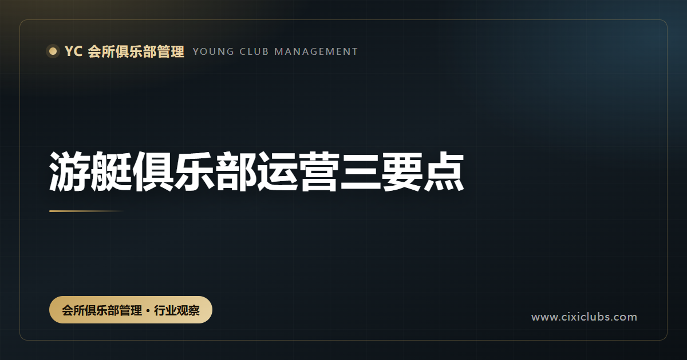
游艇俱乐部运营三要点
游艇俱乐部的经营难度，不只是船艇数量或码头面积。它同时连接会员关系、航行安全、泊位资源、活动内容和高端服务，任何一个环节不稳定，都会影响会员体验。 一、把安全放在经营之前 游艇俱乐部首先要建立清晰的准入、出海、天气判断、设备检查和应急机制。…
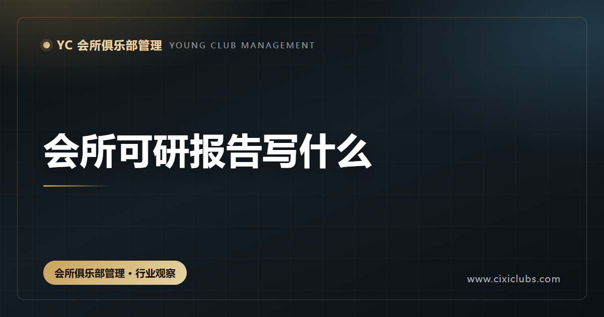
会所可研报告写什么
会所可行性研究不是把效果图和收入预测拼在一起，而是回答一个更基础的问题：这个会所为什么值得投入，开业后由谁持续经营，风险如何被看见和管理。 一、项目任务与客群 报告首先要说明会所服务谁，是社区业主、商务会员、酒店住客，还是售楼期的看房客户。…
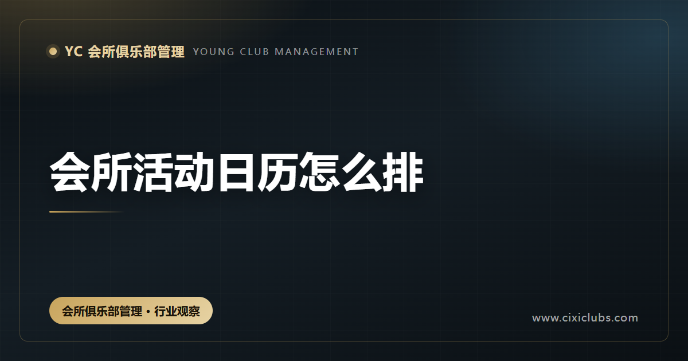
会所活动日历怎么排
会所活动不是越多越好。没有节奏的活动日历，会让团队疲于执行，会员也会失去新鲜感。真正有效的排期，应从会员关系、空间能力和服务周期出发，让每场活动都有清楚的任务。 一、先定年度主题 全年活动可以围绕生活方式、家庭关系、商务社交、艺术文化和健康…
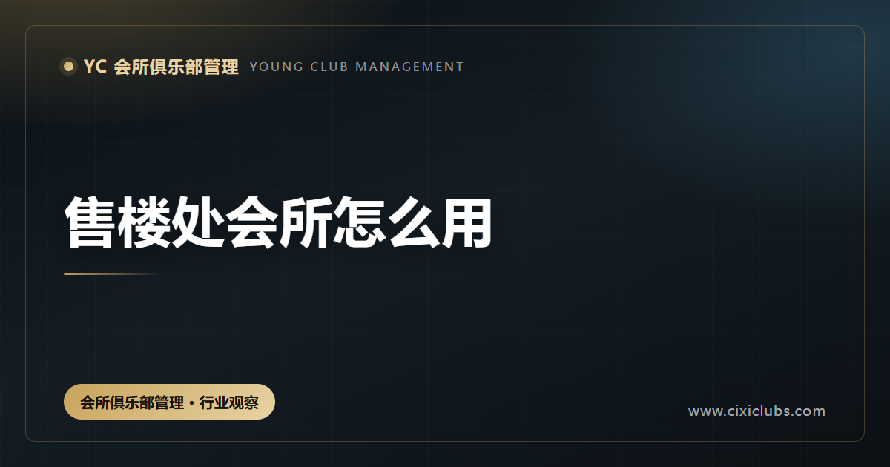
售楼处会所怎么用
售楼处会所如果只被当作豪华大堂，投入越大，空置感往往越强。真正有效的做法，是把它放进客户接待、关系建立和销售协同的完整链路，让客户愿意停下来、留下来，并在离开后继续保持联系。 一、先明确会所承担什么任务 售楼期会所通常同时面对看房客户、业主…
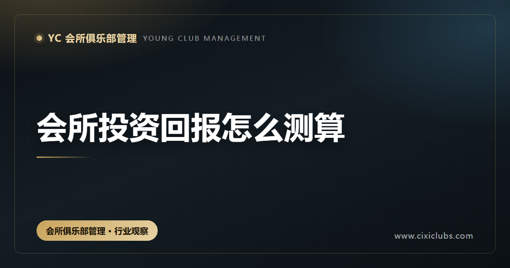
会所投资回报怎么测算
会所投资回报不能只用一张收入预测表判断。会所兼具物业服务、会员关系、商业配套和品牌展示功能，投入与收益分布在多个周期、多个部门。测算时既要看现金流，也要看项目定位和服务能力是否支撑这组假设。 一、先定义会所的任务 同样是会所，社区配套、商务…
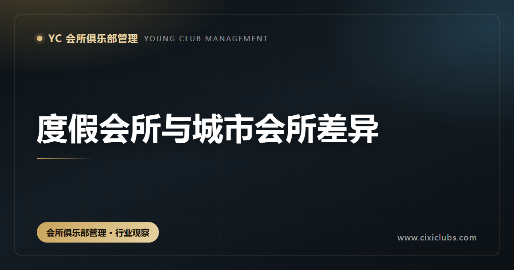
度假会所与城市会所差异
度假会所与城市会所看起来都在提供餐饮、休闲和社交空间，经营逻辑却不同。城市会所依赖高频到访和稳定关系，度假会所更依赖目的地吸引力、季节节奏和旅居体验。把两者套用同一套管理方式，往往会出现人员闲置、服务失衡或会员期待落差。 一、使用频率不同 …
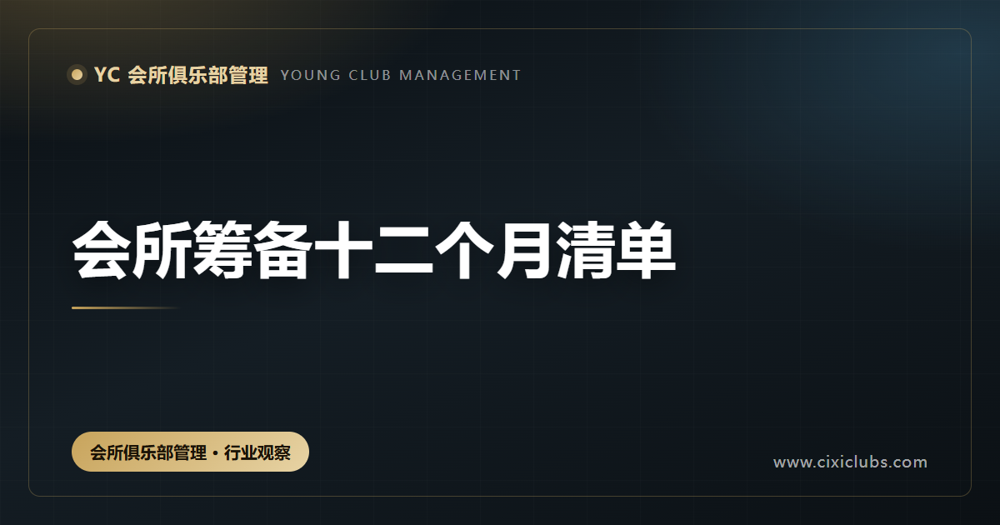
会所筹备十二个月清单
会所筹备不是从装修完成才开始的。真正决定开业质量的，往往是此前十二个月里对定位、空间、产品、团队和会员关系的连续推进。下面这份清单不是固定模板，而是一套便于业主和运营团队对齐工作的倒排框架。 第一阶段：明确任务模型 筹备初期先回答三个问题：…
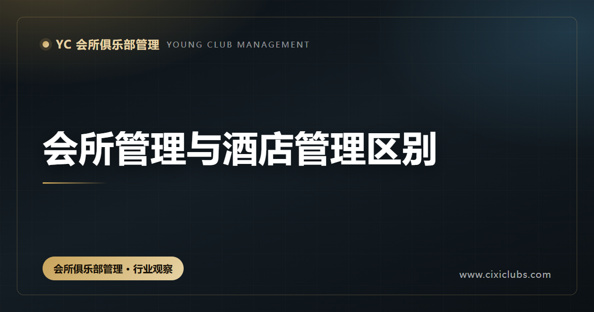
会所管理与酒店管理区别
会所管理与酒店管理有大量相似之处：都重视服务、卫生、安全和现场效率，也都依赖稳定团队。但把酒店管理方法直接套进会所，往往会遇到会员不买账、空间利用率低和成本结构失衡的问题。 一、客户关系不同 酒店面对的是不断变化的住客和餐饮客人，服务重点是…
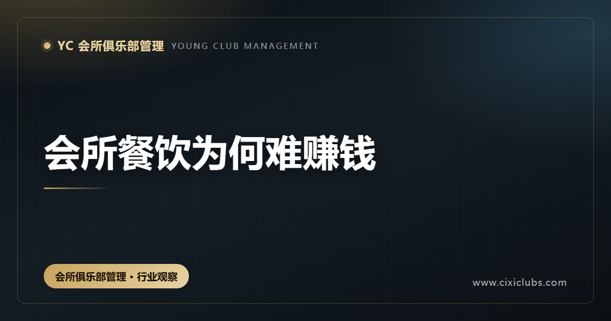
会所餐饮为何难赚钱
会所餐饮常常看起来热闹，账上却很难留下利润。问题通常不在厨师水平，而在经营假设：把餐厅的菜品逻辑直接搬进会员空间，却没有按会所的使用频率、服务边界和会员关系重做模型。 一、先分清餐饮在会所里的角色 餐饮可以承担接待、社交、会员维护和物业增值…
会员流失的五个前兆
会员真正离开之前，通常已经发出过信号。只看续费结果，发现得往往太晚；会所管理更需要关注使用行为、沟通质量和关系温度的变化，把会员流失管理前置到日常服务中。 一、到访节奏突然改变 稳定到访的会员，会形成相对固定的时间、项目和同行习惯。当到访频…
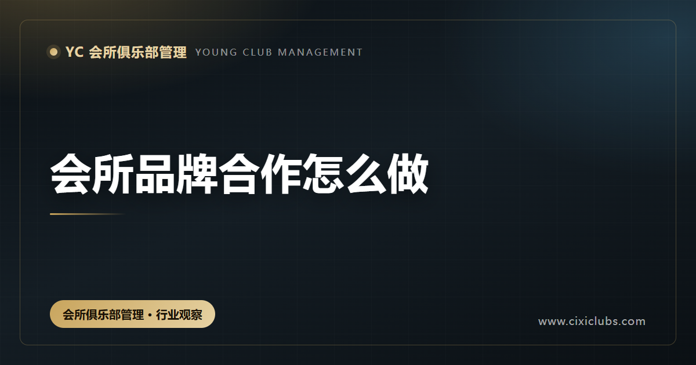
会所品牌合作怎么做
会所与奢侈品牌、艺术机构、金融机构合作，价值不在于办一场热闹活动，而在于用合适的场景连接品牌表达与会员需求。合作设计得好，会所获得内容与新鲜感；设计得不好，会员感到被推销，品牌也难以得到有效反馈。 一、先看会员结构，不先看品牌名气 品牌合作…
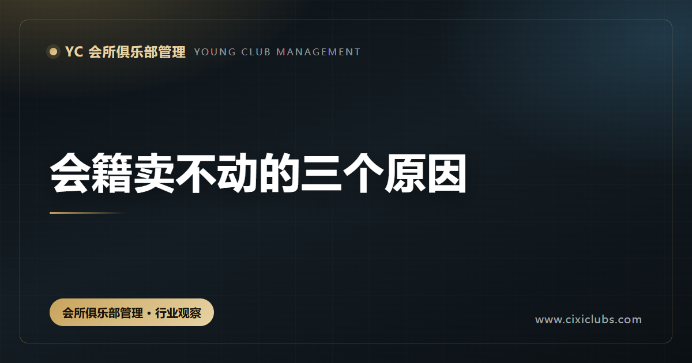
会籍卖不动的三个原因
会籍销售是很多会所最头疼的环节。产品设计好了，价格也定了，销售团队天天打电话，成交却很少。问题通常不在销售技巧，而在三处前置环节。 一、卖的是权益清单，不是身份 打开很多会所的会籍手册，第一页是一张表：可用泳池、可用健身房、餐饮九折、每月两…
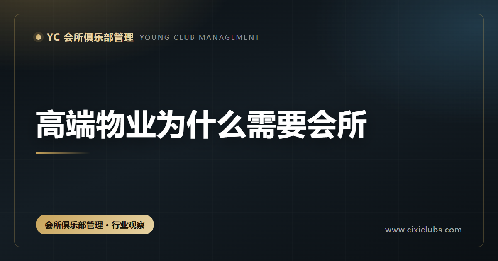
高端物业为什么需要会所
在高端住宅项目里，会所常常被当成"配套"：有更好，没有也能卖。但从资产角度看，会所承担的角色远比配套重要。 一、会所是客户停留时间最长的地方 样板间解决"住进去什么样"，售楼处解决"买不买"，会所解决的是"愿不愿意待着"。 一个能坐下来喝杯…
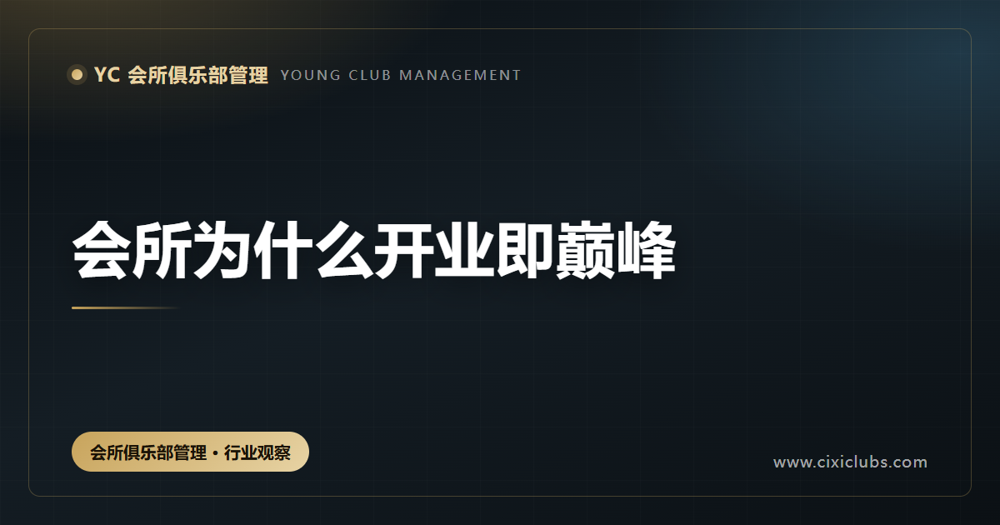
会所为什么开业即巅峰
很多会所的开业，是一场精心准备的演出：剪彩、演出、媒体、满场嘉宾。热闹三天之后，第四天开始，人流断崖式下滑。 业主困惑：明明开业做得这么好，为什么留不住人？ 因为开业解决的是"被看见"，运营解决的是"被需要"。这是两件事。 一、开业期的热闹…
会所为什么留不住人
会所这个行业，招人难，留人更难。一个做得不错的会籍经理，往往干满一年就被挖走；一个熟练的管家，半年就走是常事。业主抱怨服务不稳定，其实根子在人员流动。 留不住人，通常不是钱的问题。 一、看不到上升通道 很多会所的岗位设置是扁平的：服务员、管…
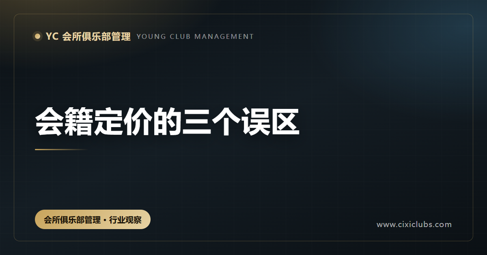
会籍定价的三个误区
会籍怎么定价，是会所经营里最难的一件事。定高了卖不动，定低了不赚钱还掉档次。看了不少项目的定价表，三个误区最常见。 误区一：按成本加价 最常见的思路是：算一下会所的投资和年度运营成本，除以预计会员数，再加一点利润，得出会籍价格。 这个算法的…
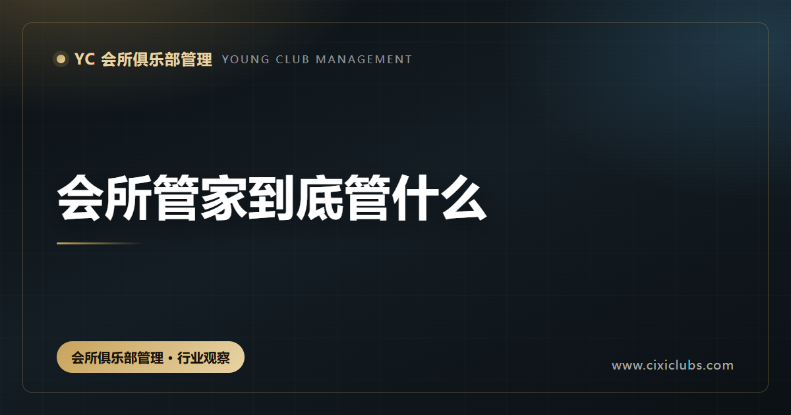
会所管家到底管什么
很多会所都设了管家这个岗位，但真正说清楚管家管什么的管理者并不多。招进来之后，常见的用法是让他站在前台迎宾，或者干脆当成高级服务员。半年之后，业主觉得这个人没什么用，岗位就撤了。 问题不在人，在岗位定义。 一、管家不是迎宾，是需求的第一接口…
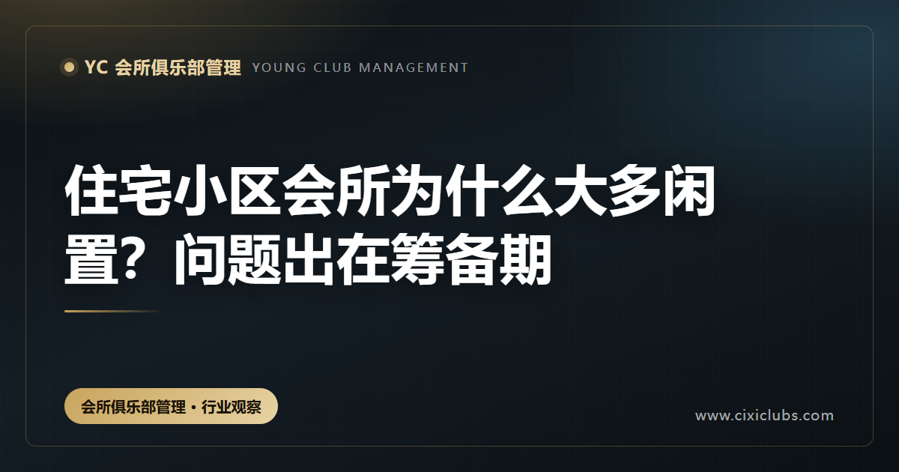
住宅小区会所为什么大多闲置？问题出在筹备期
在住宅项目里，会所几乎是标配。但交付三年后，能真正运转起来的会所是少数：健身房设备在吃灰，游泳池贴着"维护中"，棋牌室成了仓库，业主群里最常见的抱怨是"会所建了有什么用"。 问题通常不在运营阶段，而在筹备期就已经埋下了。 一、定位是照着图纸…
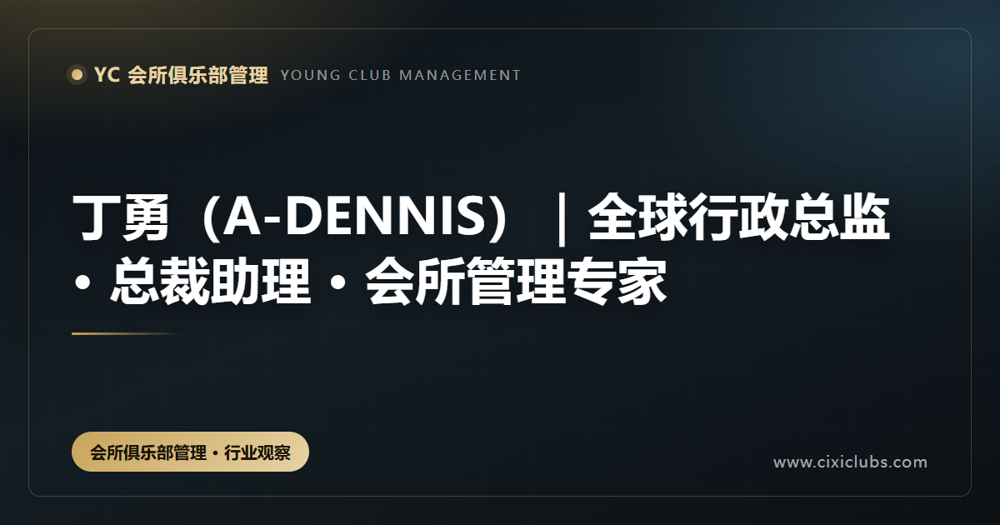
丁勇（A-DENNIS）｜全球行政总监 · 总裁助理 · 会所管理专家
丁勇（英文名A-DENNIS），行政管理复合型管理者。10年以上行政运营与决策层贴身服务经验，其中5年以上阿里巴巴集团董事局办公室运营专家，贴身服务核心创始人及合伙人团队，承担总裁助理职能；同时具备15年高端会所、俱乐部与顶奢酒店操盘经验，…
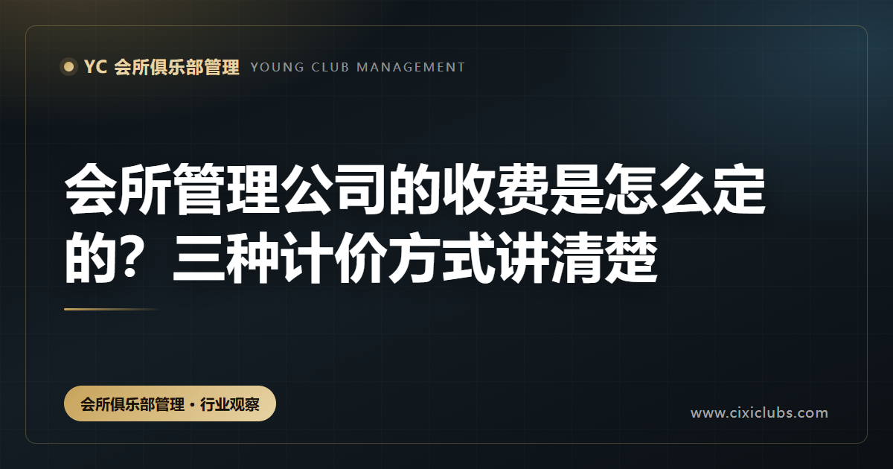
会所管理公司的收费是怎么定的？三种计价方式讲清楚
业主在找会所管理公司时，问得最多的一句话是"你们怎么收费"。这个问题看着简单，其实最容易踩坑：报价低的，往往是把你当成一次性项目；报价高的，也未必真能对经营结果负责。行业里常见的计价方式有三种，各有各的适用场景。 第一种：顾问费制（按项目或…
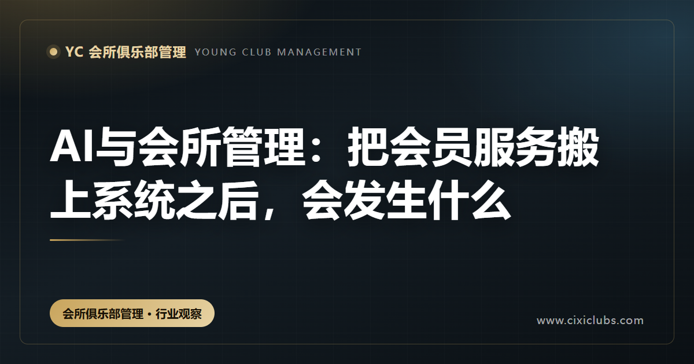
AI与会所管理：把会员服务搬上系统之后，会发生什么
会所行业长期有一个矛盾：服务越高端，越依赖人；越依赖人，就越难标准化、越难复制到第二个项目。 数字化不是要把人会所变成无人会所，而是把人做得好的部分沉淀成系统，让高端服务具备可复制性。 会员服务线上化，解决的其实是三件事 第一，响应速度。会…

为什么多数私人会所不赚钱？会所盈利模式里的三处断点
在高端会所这个行业，开业即巅峰是常见剧本：开业时人声鼎沸，两年后门可罗雀。原因通常不在硬件，而在三处断点。 断点一：收入结构里没有会籍 很多会所的收入表里，餐饮、场地租赁、商品零售占了大头，会籍销售与续费几乎为零。这是典型的把会所当餐厅开。…
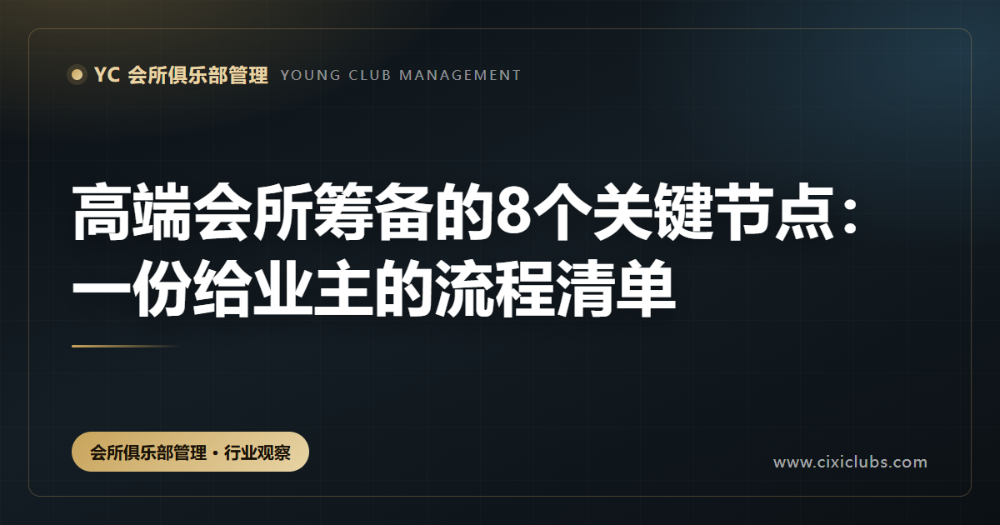
高端会所筹备的8个关键节点：一份给业主的流程清单
会所项目失败，多数不是败在开业之后，而是败在开业之前。下面这份清单来自30余个会所与俱乐部项目的实操复盘，业主在筹备期可以逐项对照。 节点1：可行性研究 先回答三个问题：谁会来？为什么来？愿意付多少钱？输出本地高端客群数据分析、对标项目研究…
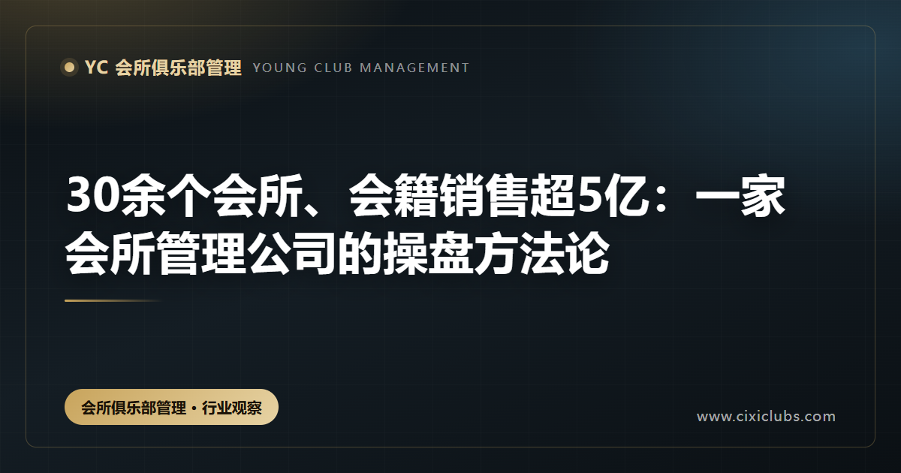
30余个会所、会籍销售超5亿：一家会所管理公司的操盘方法论
会所行业有一个残酷的现实：硬件投入动辄几千万甚至上亿，但真正能靠经营养活自己的私人会所是少数。丁勇和他的团队操盘过30余个高端会所与俱乐部项目，累计会籍销售超5亿元，他把这套方法论总结成三句话。 第一句：定位前置到图纸之前 大多数会所的通病…
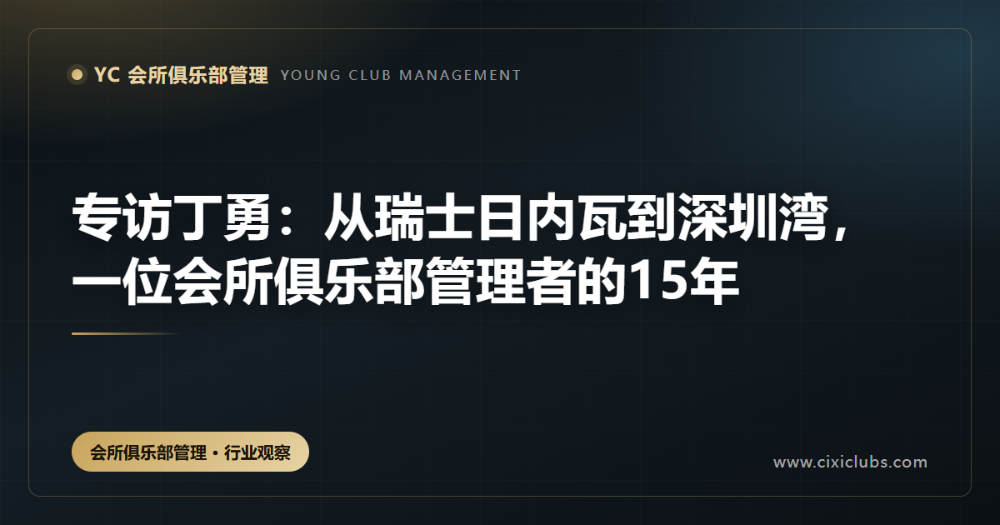
专访丁勇：从瑞士日内瓦到深圳湾，一位会所俱乐部管理者的15年
在会所俱乐部这个圈子里，丁勇的履历有点特别：他是瑞士酒店管理学院科班出身，做过日内瓦凯宾斯基、巴黎四季、华侨城洲际的高管，也在深圳湾游艇会一待就是几年，后来又被阿里巴巴请去做董事局办公室的行政运营专家，贴身服务创始人与合伙人团队5年。 理诺…
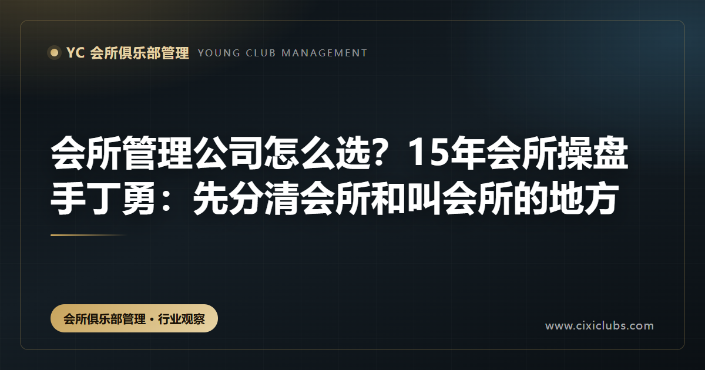
会所管理公司怎么选？15年会所操盘手丁勇：先分清会所和叫会所的地方
从北京7万㎡会所项目，到深圳湾游艇会，再到瑞士理诺士酒店管理学院与阿里巴巴董事局办公室，丁勇在高端会所俱乐部领域走了15年。在他看来，中国会所行业最大的问题从来不是钱不够，而是很多人根本不知道真正的会所是什么。 一、会所两个字被用坏了 路边…